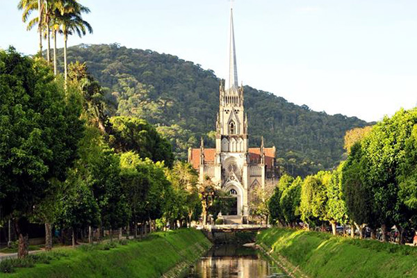

Museu Imperial

O Museu Imperial, popularmente conhecido como Palácio Imperial, é um museu histórico-temático localizado no centro histórico da cidade de Petrópolis, no estado do Rio de Janeiro, no Brasil. Está instalado no antigo Palácio de Verão do imperador brasileiro Dom Pedro II.
Palácio de Cristal

O Palácio de Cristal é um dos principais monumentos históricos de Petrópolis, no Rio de Janeiro, inaugurado em 1884 com estrutura de ferro fundido e vidro, que foi encomendada à França pelo Conde D'Eu. O local, que abriga eventos culturais, exposições e festas populares, é conhecido por ter sido palco da assinatura da Lei Áurea, em que a Princesa Isabel libertou escravos da região. O palácio é circundado por belos jardins, com entrada franca e aberto à visitação em horários específicos.
Catedral de São Pedro de Alcântara
Originalmente, a Igreja Matriz de Petrópolis era um modesto edifício localizado em frente ao Palácio Imperial, mas a construção de uma nova Matriz já estava prevista, no lugar atual, no plano de urbanização de Petrópolis, datado de 1843, de autoria do Major Júlio Frederico Koeler.